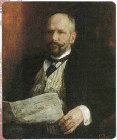
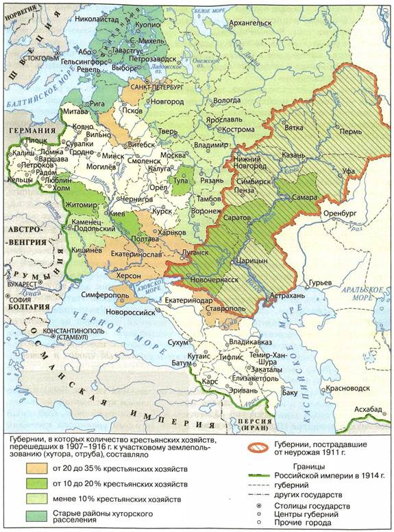
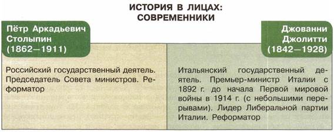

Какое значение для развития России имели столыпинские реформы?
1. П. Л. Столыпин и его курс
В развитии Российской империи в начале XX в. серьёзную роль суждено было сыграть Петру Аркадьевичу Столыпину (1862—1911). В разгар революции 1905—1907 гг. Николай II назначил Столыпина на важнейшие посты в государстве: он стал министром внутренних дел (с апреля 1906 г.) и одновременно занял пост председателя Совета министров (с июля 1906 г.).
Столыпин считал необходимым вести жёсткую борьбу с революцией. Ещё ранее, будучи губернатором Саратовской губернии, он предпринял ряд жёстких мер, решительно подавив крестьянские бунты в одном из уездов.
Однако Столыпин хорошо понимал, что недостаточно только лишь давать отпор революционерам. Он был убеждён, что выходом из кризиса, охватившего Россию, должны быть реформы. Свой политический курс сам Столыпин именно так и охарактеризовал: «порядок и реформы».
Непримиримость Столыпина в борьбе с революцией чрезвычайно ополчила против него левые силы. Террористы ещё в 1905 г. «приговорили» политика к смертной казни. На Столыпина было совершено 11 покушений. Одно из них, организованное в 1906 г. эсерами-максималистами во время приёма Столыпиным посетителей на своей казённой даче, привело ко многим жертвам (пострадало более 100 человек, в том числе дети Столыпина Аркадий и Наталия). Но эти страшные события не сломили Столыпина.
Ответом террористам стал закон о создании военно-полевых судов в августе 1906 г. Эти чрезвычайные военно-судебные органы должны были ускорить суд над теми, кто обвинялся в разбое, убийствах, грабеже, нападениях на военных, полицейских и должностных лиц. Военно-полевые суды вводились как чрезвычайная мера в борьбе с революционными выступлениями и террористическими актами для стабилизации обстановки в стране. Карательные меры вызвали неприятие левых сил. По имени Столыпина верёвку для повешения стали называть «столыпинским галстуком».

П. А. Столыпин
Однако, по мысли Столыпина, применение наказаний было «не реакцией, а порядком», который необходим для осуществления реформ. Главными он считал реформу местного самоуправления, развитие просвещения, установление гражданских прав и свобод, обеспечение законности, решение рабочего вопроса. Но центральным мероприятием его деятельности стала аграрная реформа.
2. Аграрная реформа
Аграрный вопрос, вызванный малоземельем крестьян, представлял одну из наиболее серьёзных проблем Российской империи. Столыпин предпринял попытку поддержать крестьян, не затрагивая интересы помещиков, и повысить доходность сельского хозяйства.
Вспомните, затронула ли реформа 1861 г. общинные порядки. Каким образом община тормозила развитие сельского хозяйства в 1860—1890-е гг.? В каком положении находились крестьянские хозяйства в начале XX в.?
Столыпин считал необходимым дать крестьянам возможность выхода из общины, стимулировать появление слоя крепких крестьян-фермеров с достаточным количеством земли. Такой крестьянин-собственник должен был «накормить» Россию, нести культуру и просвещение в деревню, стать опорой социальной стабильности. «Крепкие крестьяне», по мысли Столыпина, должны были стать опорой самодержавного строя. Столыпин опирался не только на теоретические рассуждения, но и на свои наблюдения, сделанные во время службы в Литве, за хуторскими хозяйствами немецких крестьян в соседней Восточной Пруссии. Важным условием аграрных преобразований, по замыслу Столыпина, было проведение реформы без ущерба для помещиков, не затрагивая помещичьих земель.
Реформа началась в 1906 г. с подписания нескольких указов. Была начата продажа удельных и казённых земель малоземельным, крестьянам по льготной цене, которой занимался государственный Крестьянский банк, созданный ещё при Александре III. Тогда же вышел указ, который уравнивал крестьян в гражданских правах с другими сословиями.
Главная суть реформы была изложена в указе 9 ноября 1906 г. Он вводил право свободного выхода домохозяев из общины и закрепления в личную собственность своего надела. Крестьянин имел право потребовать от общины выделения всех своих разрозненных полос земли в единый отруб. Если крестьянин переносил на эти земли свой дом и хозяйственные постройки, то это называлось хутор. На отделение отрубников и хуторян требовалось разрешение 2/3 общинного схода. Если в течение месяца община не принимала решения, то крестьянин имел право выделиться без её согласия при помощи землеустроительной комиссии. Указ 9 ноября 1906 г. был отвергнут левыми партиями II Государственной думы, он стал законом только решением III Государственной думы в 1910 г.

Аграрная реформа П. А. Столыпина
В 1911 г. было издано «Положение о землеустройстве», нацеленное на форсированное создание отрубов и хуторов при проведении землеустроительных работ.
В результате за период 1907—1914 гг. из общины вышло около 28 % от общего числа общинников (9 млн). Заявлений было подано больше — около 35 %. Выходили из общины пограничные слои крестьян — бедняки и богатые. Середняцкая масса боялась рисковать и осталась в большинстве своём в общине. Бедняки выходили затем, чтобы избавиться от бесполезного малоземельного груза и уйти в город, пополнив ряды рабочего класса, или переселиться на свободные земли в Сибирь.
Другим масштабным мероприятием в рамках аграрной реформы стало содействие переселению крестьян в малозаселённые районы, пригодные для земледелия: в Южную Сибирь, на Дальний Восток, в Среднюю Азию. Для этих крестьян организовывали специально оборудованные вагоны («столыпинские вагоны») для переправки вместе с семьями, имуществом, скотом. Устанавливались многочисленные льготы для желающих отправиться на новые места. Переселенцы на 5 лет освобождались от налогов, получали в собственность землю (15 гектаров на главу семьи и 45 гектаров на остальных членов семьи), денежную ссуду, которая с 1912 г. в некоторых отдалённых районах доходила до 400 р. на семью (из них 200 р. выдавались безвозмездно). Мужчин освобождали от воинской повинности.
В результате за 1907—1914 гг. за Урал переселилось более 3 млн человек, большую часть из них составляли бедняки, искавшие лучшей доли на новом месте. От 12 до 17 % из них вернулись обратно, не справившись с трудными условиями или разорившись. Большинство же переселенцев остались на новых землях.
В результате аграрной реформы Сибирь получила мощный толчок к социально-экономическому развитию. Население Сибири значительно выросло. Посевные площади увеличились на 80 %, тогда как в европейской части только на 10%. Особенно интенсивно развивалось скотоводство, обгоняя по темпам животноводство европейской части страны.
Реформу сопровождали широкие агрокультурные мероприятия правительства. В деревню отправились тысячи агрономов, зоотехников, землемеров. Создавались агропромышленные службы для крестьян, открывались сельскохозяйственные курсы по внедрению новых форм сельскохозяйственного производства.
3. Результаты аграрной реформы
Историки по-разному оценивают результаты аграрной реформы Столыпина. С одной стороны, даже при том, что из общины выделилась меньшая часть крестьянства, те мероприятия, что удалось провести до начала Первой мировой войны, благотворно сказались на развитии сельского хозяйства и экономики в целом. Производство зерновых в предвоенные годы выросло в 1,5 раза, технических культур — в 3 раза. Возрос экспорт сельскохозяйственной продукции. Россия давала 25 % мирового экспорта зерна, успешно конкурируя с США, Канадой, Аргентиной. Сопутствующим фактором была хорошая конъюнктура на международном зерновом рынке. Мировые цены на хлеб перед войной выросли на 35 %.
Валовой доход от сельского хозяйства в 1913 г. составил 53 % от общего валового дохода. Выросла товарность аграрного производства. Следствия мероприятий реформы были одним из факторов промышленного подъёма в России в 1909—1913 гг. Реформа в целом простимулировала капиталистическое развитие: выросла численность рабочего класса, общая ёмкость внутреннего рынка, потребность в сельскохозяйственной технике и удобрениях, широкое развитие получила аренда земли, система кредитования, крестьянская кооперация.
Но вместе с тем реформа не решила проблем аграрного перенаселения и голода. Россия по-прежнему уступала передовым индустриальным странам по многим критериям развития. Так, например, в 1913 г. в США получали 68 пудов хлеба с одной десятины, во Франции—89, в Бельгии —168, в России — 55 пудов.
Для достижения более весомых результатов реформе не хватило времени. Сам Столыпин говорил о том, что для успеха его начинаний потребуется 15— 20 лет мирного развития. Но этого времени у нашей страны не оказалось. Последовательному проведению реформ помешала внезапная гибель его главного вдохновителя и идеолога (в 1911 г. П. А. Столыпин был убит, став жертвой политического террориста). Кроме того, в 1914 г. началась Первая мировая война, и вскоре многие мероприятия реформы пошли на спад.
Пётр Аркадьевич Столыпин (1862—1911)
Российский государственный и политический деятель, министр внутренних дел, премьер-министр России. Происходил из старинной дворянской семьи. Получил блестящее образование в Санкт-Петербургском Императорском университете, после чего приступил к государственной службе.
Свою карьеру Столыпин начал в Прибалтике сначала в роли губернского предводителя дворянства в Ковенской губернии, потом стал губернатором Гродненской губернии.
Яркой страницей в биографии Столыпина становится его назначение на должность саратовского губернатора в 1903 г. Здесь Пётр Аркадьевич добивается заметных успехов по налаживанию обстановки в губернии и подавлению крестьянских бунтов. Его усердие и старания в работе были замечены, и в 1906 г. Столыпин становится министром внутренних дел, а затем председателем Совета министров, сохраняя прежний пост. Премьер-министру Столыпину удалось достичь положительных результатов в борьбе с революционным движением, провести аграрную реформу, стимулировать освоение сибирских земель и т. д. В то же время премьер встретил огромное сопротивление политических кругов, оппозиции. На Столыпина было совершено более десятка покушений, но это не останавливало Петра Аркадьевича в его прогрессивной государственной деятельности. «Вам нужны великие потрясения — нам нужна великая Россия», — говорил премьер.
4. Программа преобразований Столыпина
Столыпинская программа преобразований, помимо аграрных мероприятий, включала широкий комплекс мер по перестройке местного самоуправления, национальному и религиозному вопросам, распространению просвещения, решению рабочего вопроса, а также по проведению налоговой реформы. Большинство этих проектов не были реализованы в полной мере, так как встретили противодействие со стороны правых сил при дворе, в Государственном совете и в Государственной думе.
Ещё в 1906 г. Министерство внутренних дел разработало проект земской реформы, который основывался на принципе перехода от сословных к имущественным критериям формирования курий. Предполагалось ввести низший уровень земского самоуправления — волостное всесословное земство. Этот проект был связан с аграрной реформой и имел целью усиление влияния вышедших из общины богатых крестьян в земском самоуправлении. Проект земской реформы обсуждался на земских и дворянских съездах, но не нашёл поддержки в Государственной думе и Государственном совете.
По предложению Столыпина с целью укрепления русского влияния в стратегически важных губерниях Литвы, Белоруссии, Западной Украины вводилось земское самоуправление. Причём предполагалось снизить имущественный ценз на выборах в эти земства для русских помещиков и православного духовенства. После того как закон 1910 г., принятый Государственной думой, оказался отвергнут Государственным советом, земства в западных губерниях были введены указом императора в 1911 г.
В результате из 43 проектов, предлагавшихся Столыпиным, осуществились лишь 10. Некоторые были реализованы уже после его смерти. Так, законы о страховании рабочих были приняты лишь в 1912—1913 гг. На основе взносов рабочих и предпринимателей создавались кассы, из которых выплачивались пособия по нетрудоспособности и в случае гибели рабочего на производстве. В 1912 г. образовывались высшие начальные училища, в которые принимались дети от 10 до 13 лет, окончившие начальные народные училища. Разрабатывался проект закона «О введении всеобщего начального обучения в Российской империи», однако он так и остался на бумаге, так как был отклонён Государственным советом.

ПОДВЕДЁМ ИТОГИ
Деятельность П. А. Столыпина внесла огромный вклад в социально-экономическое развитие России в начале XX в. Аграрная реформа Столыпина способствовала развитию капитализма и в сельском хозяйстве. Сложная социально-политическая ситуация в стране предопределила незавершённость многих начинаний Столыпина.
Вопросы и задания для работы с текстом параграфа
1. Какие обстоятельства диктовали необходимость проведения аграрной реформы? 2. Перечислите мероприятия, предпринятые в рамках Столыпинской аграрной реформы. 3. Можно ли утверждать, что реформы П. А. Столыпина являются продолжением реформ С. Ю. Витте? Объясните свой ответ. 4. Расскажите о результатах аграрной реформы. Как вы их оцениваете? Какие цифры, приведённые в учебнике, подтверждают положительные результаты аграрной реформы? 5. Назовите проекты преобразований, предложенные П. А. Столыпиным. 6. Что означал бы на практике переход от сословных к имущественным критериям формирования избирательных курий по земской реформе П. А. Столыпина?
Думаем, сравниваем, размышляем
1. Можно ли назвать П. А. Столыпина «случайным человеком» во власти? Аргументируйте свой ответ, используя цитаты из параграфа. 2. Почему свою деятельность на посту министра внутренних дел, а потом председателя Совета министров П. А. Столыпин начал с репрессий? 3. Разделившись на группы по 5—6 человек, составьте тезисы собственных программ преобразований в сфере сельского хозяйства, альтернативных программе П. А. Столыпина. Обсудите эти программы в классе и попытайтесь выработать на их основе один вариант.
4. Проанализируйте причины сопротивления многим начинаниям П. А. Столыпина как со стороны консервативных кругов, так и со стороны левых сил.